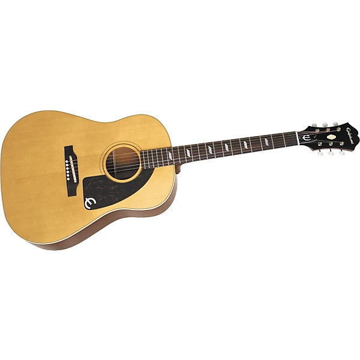

1963 Hofner 500/1 Violin Bass
A hollow electric violin-shaped bass created by Hofner and popularized by Paul McCartney of the Beatles.

1968 Rickenbacker 40001S Bass
A hollow electric violin-shaped bass created by Hofner and popularized by Paul McCartney of the Beatles.

Epiphone Texan
Legendary slope-shouldered acoustic guitar known for its bright tone. Famous for being used by Paul McCartney and Peter Frampton.

Bluthner Grand Piano
Prestigious pianos known for their warm tone manufactured by the German company bluthner. Used by famous artists like The Beatles.

Fender Rhodes Suitcase 73
Electric piano brand invented by Harold Rhodes that became popular in the 70s.